One lamp, sixteen views.
A smooth dome reflects the room. Fluted glass breaks its light into lines. These AI-generated photographic studies explore that difference for BRUME, a fictional lighting studio.
Campaign and collection
Open any photograph to see the full-size plate.

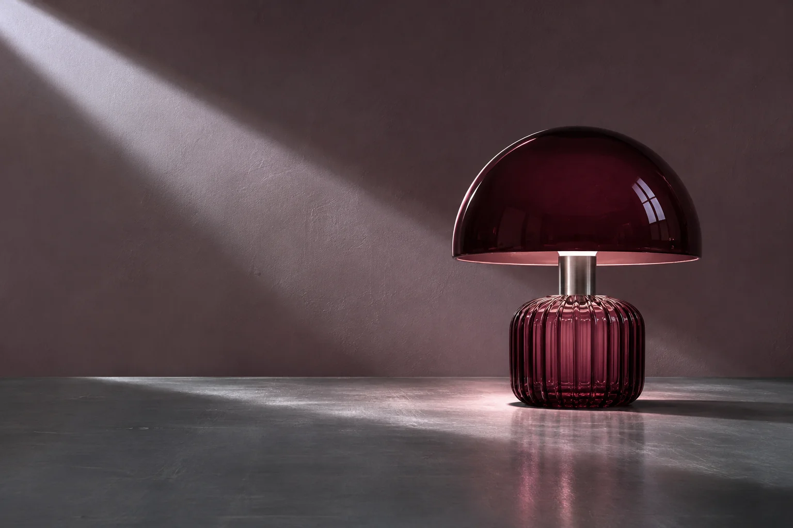
A diagonal shaft of light approaches the purple dome. Keeping the left side quiet gives a campaign headline somewhere to sit.

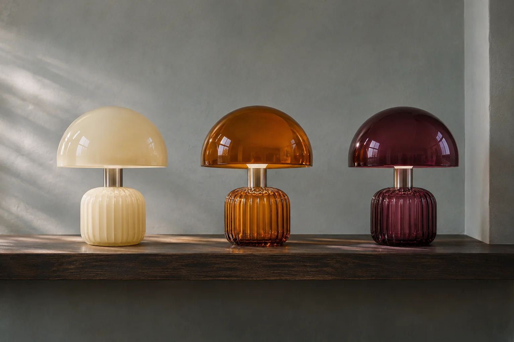
A shared shelf puts all three finishes on one baseline. The silver neck and the fluted foot repeat from left to right.
The changing room
Ivory, Amber and Plum each have a time of day. In these interiors the surrounding room changes with the glass.

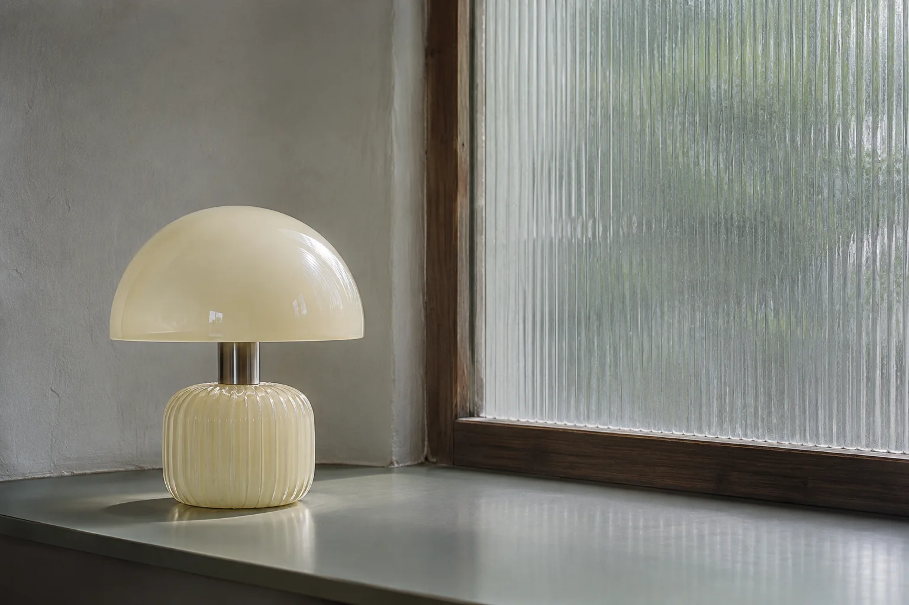
The vertical lines in the window repeat the lines in the foot. Soft daylight keeps the white dome visible against the wall.

A narrow patch of sun crosses the ledge. It catches the lip of the shade and leaves a longer shadow on the stone.

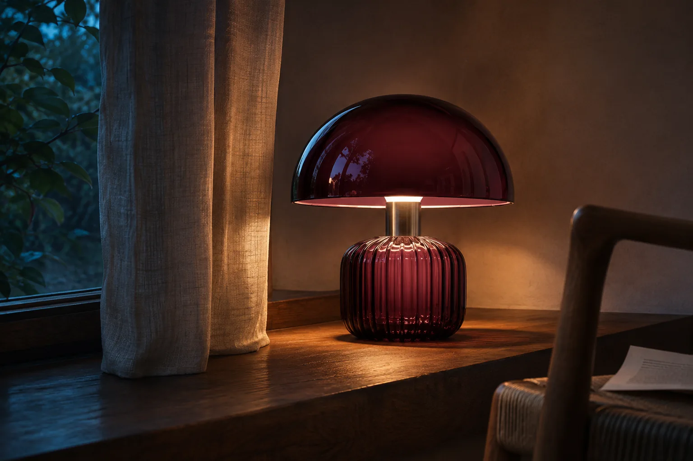
Blue light stays at the window. The warm pool on the timber suggests the edge of a reading spot.
Showing the scale
A long view establishes the architecture. Closer views give the object a place in a room and a hand something to hold.

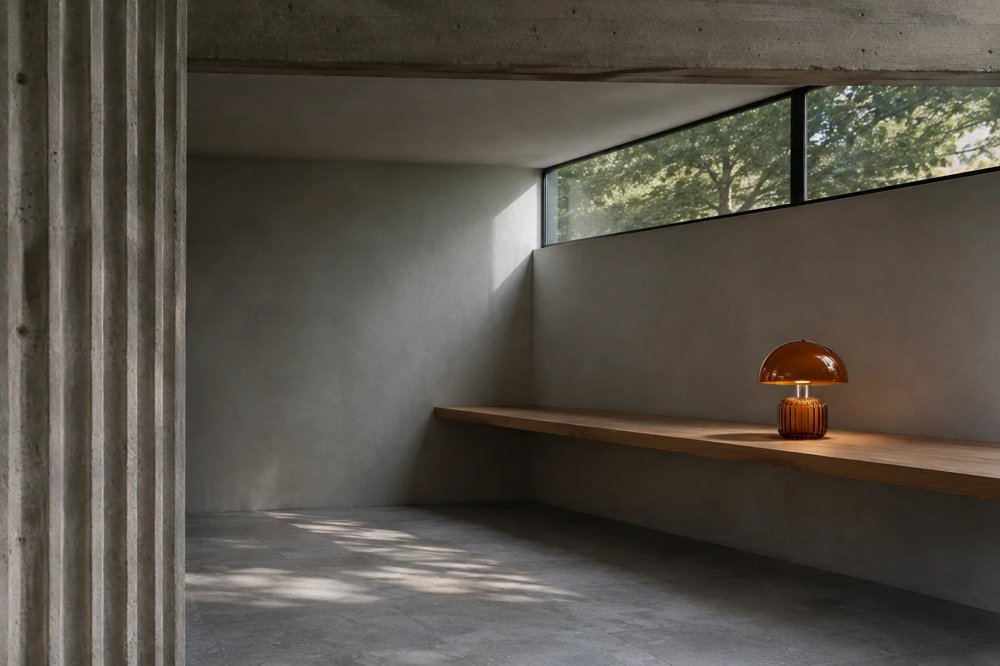
The long ledge establishes scale from a distance. A high strip of window holds the lamp against the depth of the room.

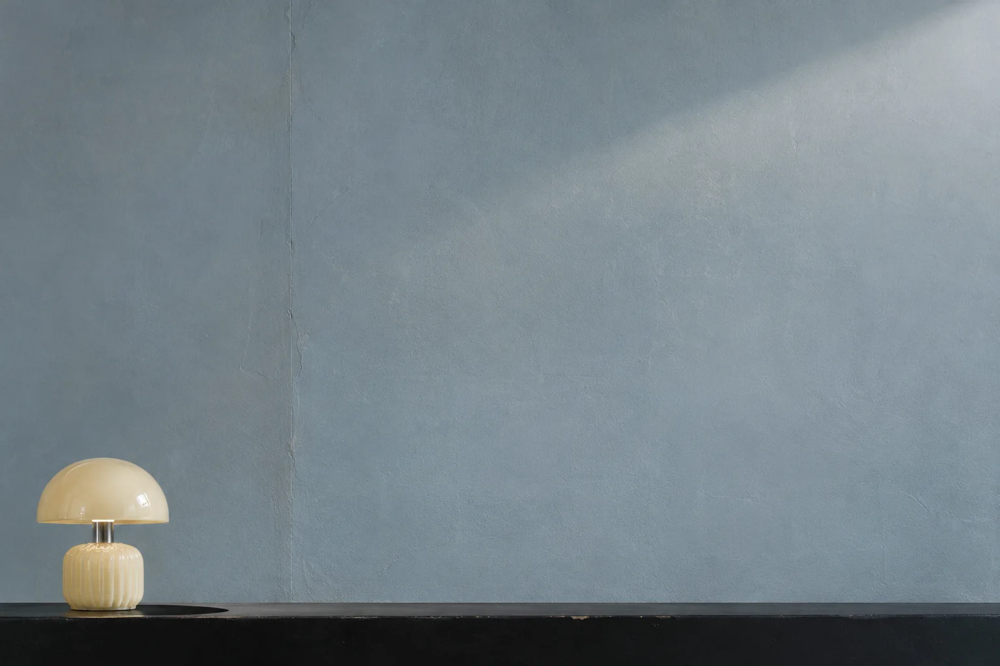
Ivory sits low in a field of cool blue-grey. The change in light across the empty wall carries most of the picture.

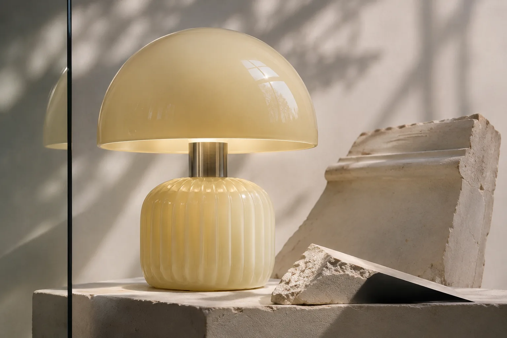
A dark glass edge and a broken plaster face surround the smooth dome. Their sharp lines make its curve easier to read.

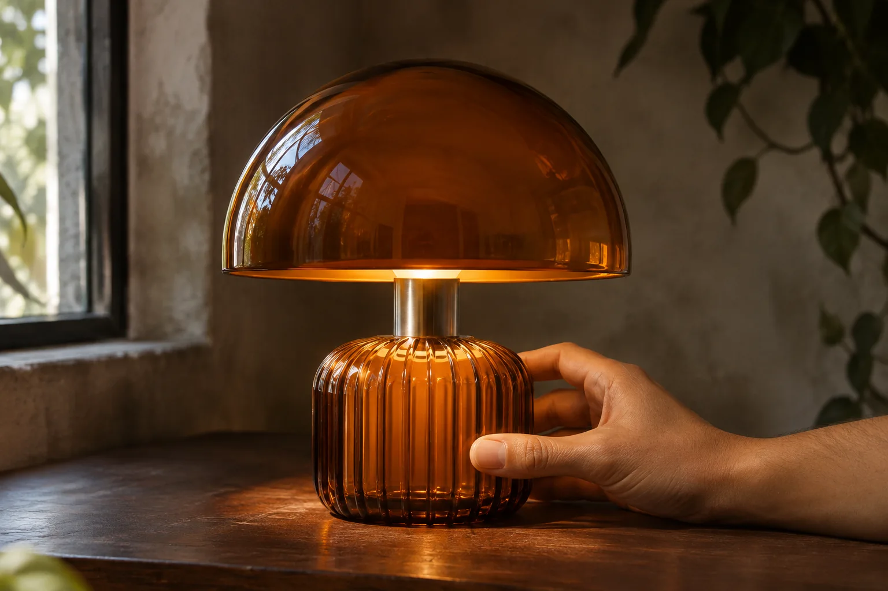
Fingers meet the ribs at the side of the foot. The gesture gives the lamp a familiar scale.

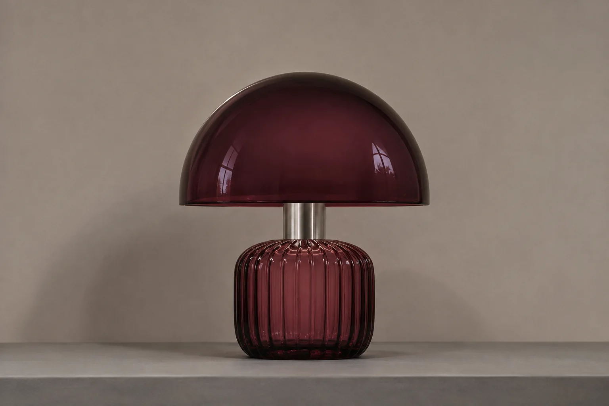
Showing the whole outline makes the overhang legible. The short silver collar creates a gap between the two glass forms.
Looking through glass
Move from separate material samples to a cropped detail, then follow the light as it leaves the object.

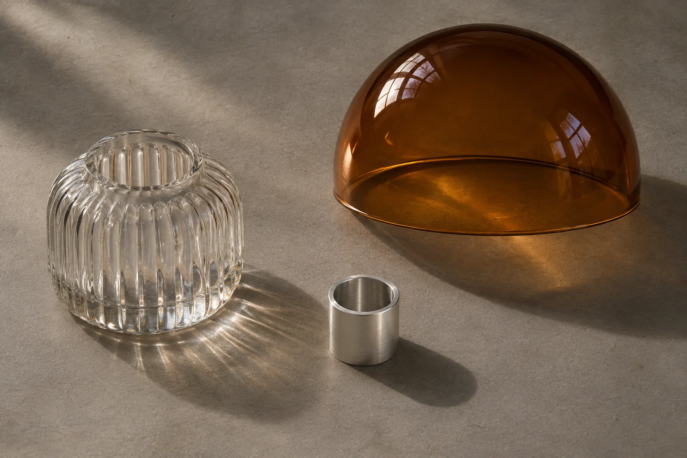
Separating the pieces exposes their edges. The clear ribbed sample spreads small lines across the stone, while the collar casts a solid shadow.

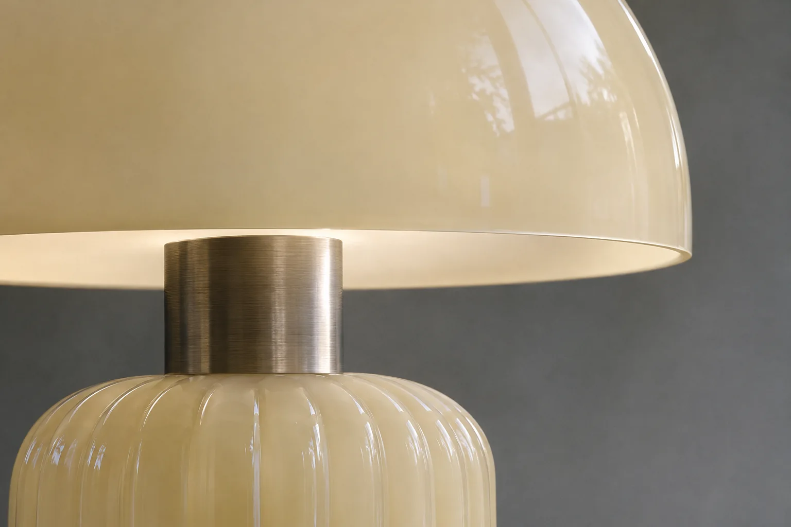
An enlarged crop isolates the collar between the opal shade and its foot. The three surfaces return a different kind of highlight.

At this distance the lamp loses its silhouette. Each rise in the amber glass interrupts the reflected light.

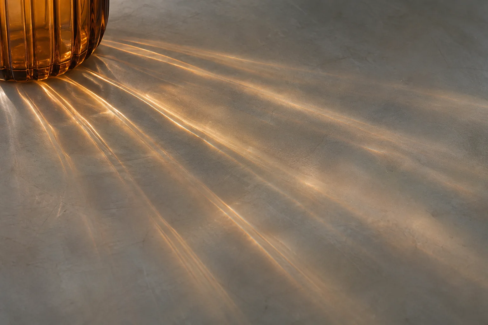
Only a corner of the foot stays in frame. The gaps between the projected lines echo the breaks in the brand mark.
One lamp, off and on
The Amber edition sits on the same stone ledge in both views. Compare the lower rim of the shade and the surface beneath it.

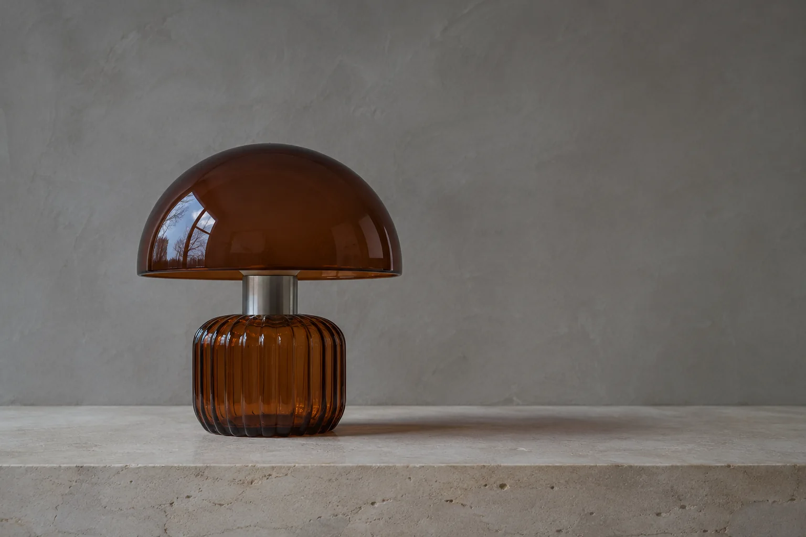
A window is visible in the dome. The slab below the foot reads as one continuous grey surface.

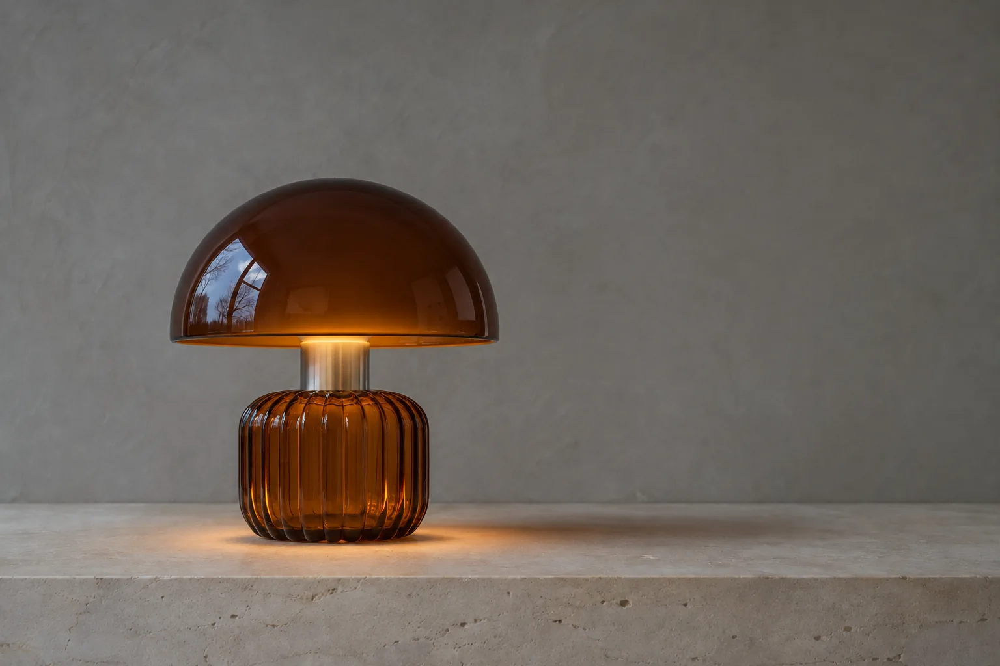
With the lamp lit, the brightest line moves under the shade. A small pool appears beneath the foot.